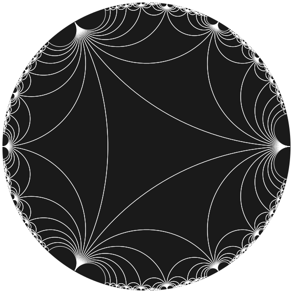
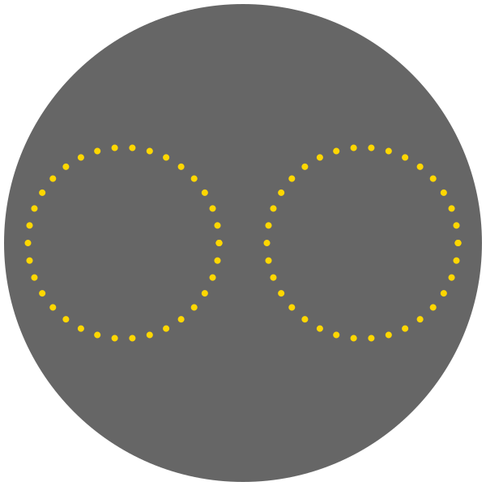
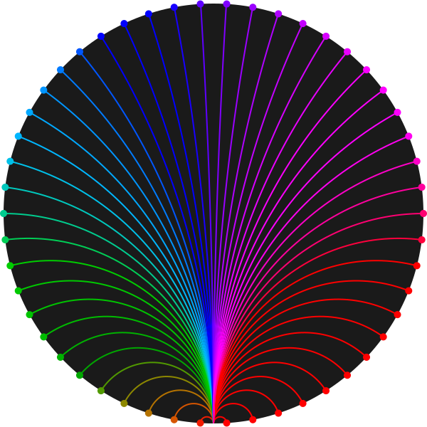
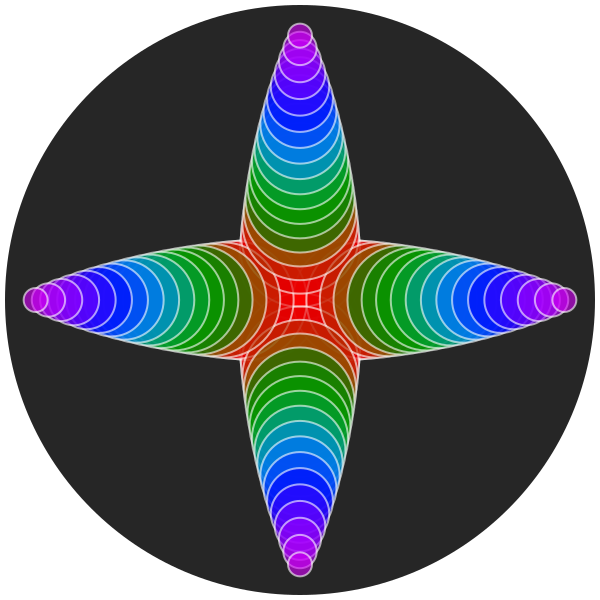
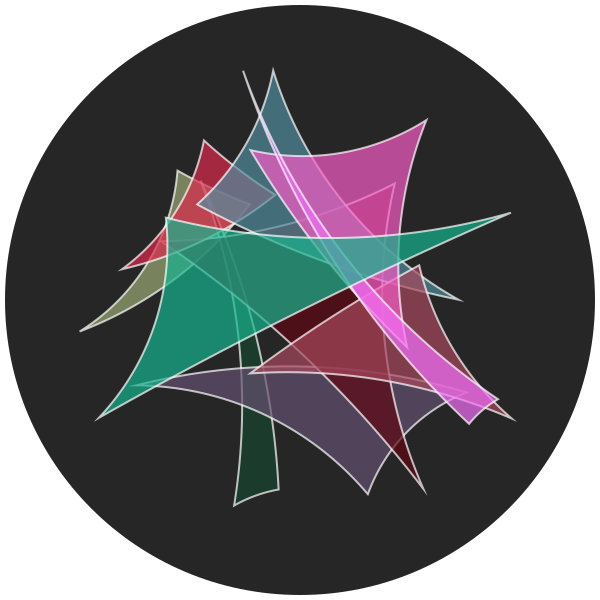
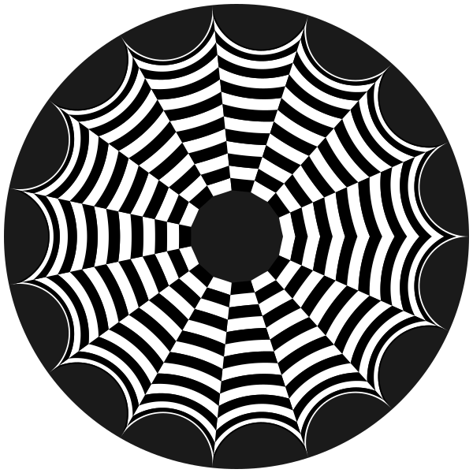
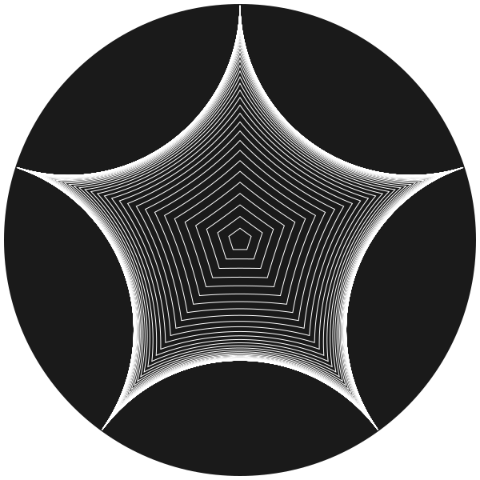

The basics
This package lets you draw hyperbolic geometry using the Poincaré disk model.
The Poincaré disk
The Poincaré disk is a two-dimensional hyperbolic plane. It provides a surface on which you can draw using non-Euclidean geometry, in which most of Euclid's geometric postulates apply, but the final (fifth, "parallel") postulate doesn't. You'll have no trouble finding explanatory material on the internet!
In the Poincaré disk model, the shortest path between two points is drawn as a circular arc called a geodesic. The internal angles of triangles add up to less than 180°. Hyperbolic circles are represented as Euclidean circles contained entirely inside the disk.

Famous French mathematician and physicist Henri Poincaré (1854–1912) popularized the hyperbolic disk model in 1905 and it now carries his name. However, this was really a rediscovery of the original work of Eugenio Beltrami some decades earlier.
Overview
Points on the Poincaré disk are represented as complex numbers z, where |z| < 1.
The disk is a unit disk, with (0 + 0im) at the center. The four cardinal points (E, S, W, and N) are:
1.0 + 0.0im0 + 1.0im-1.0 + 0.0im0 - 1.0im
using PoincareDiskusing Luxor@drawsvg begin background("black") sethue("grey15") draw_poincare_disk(action = :fill) p1 = 1.0 + 0.0im # E p2 = 0 + 1.0im # S p3 = -1.0 + 0.0im # W p4 = 0 - 1.0im # N sethue("cyan") circle.(complex_to_point.([p1, p2, p3, p4]), 5, :fill) label.(["E", "S", "W", "N"], [:w, :n, :e, :s], complex_to_point.([p1, p2, p3, p4]))end![](data:image/svg+xml;utf-8,<?xml version="1.0" encoding="UTF-8"?>
<svg xmlns="http://www.w3.org/2000/svg" xmlns:xlink="http://www.w3.org/1999/xlink" width="600" height="600" viewBox="0 0 600 600">
<defs>
<g>
<g id="glyph-244535-0-0">
<path d="M 0.855469 -7.171875 L 6.085938 -7.171875 L 6.085938 -6.292969 L 1.800781 -6.292969 L 1.800781 -4.117188 L 5.761719 -4.117188 L 5.761719 -3.285156 L 1.800781 -3.285156 L 1.800781 -0.855469 L 6.15625 -0.855469 L 6.15625 0 L 0.855469 0 Z M 0.855469 -7.171875 "/>
</g>
<g id="glyph-244535-0-1">
<path d="M 1.398438 -2.3125 C 1.421875 -1.90625 1.515625 -1.578125 1.683594 -1.324219 C 2.007812 -0.847656 2.574219 -0.609375 3.390625 -0.609375 C 3.753906 -0.609375 4.085938 -0.664062 4.382812 -0.765625 C 4.964844 -0.96875 5.253906 -1.328125 5.253906 -1.851562 C 5.253906 -2.242188 5.132812 -2.519531 4.886719 -2.6875 C 4.640625 -2.847656 4.253906 -2.988281 3.726562 -3.109375 L 2.753906 -3.328125 C 2.117188 -3.472656 1.671875 -3.632812 1.40625 -3.804688 C 0.949219 -4.101562 0.722656 -4.550781 0.722656 -5.148438 C 0.722656 -5.792969 0.945312 -6.320312 1.390625 -6.734375 C 1.835938 -7.148438 2.46875 -7.351562 3.285156 -7.351562 C 4.039062 -7.351562 4.675781 -7.171875 5.203125 -6.808594 C 5.726562 -6.445312 5.992188 -5.867188 5.992188 -5.070312 L 5.078125 -5.070312 C 5.03125 -5.453125 4.925781 -5.746094 4.765625 -5.953125 C 4.46875 -6.328125 3.964844 -6.515625 3.257812 -6.515625 C 2.683594 -6.515625 2.273438 -6.394531 2.023438 -6.152344 C 1.773438 -5.910156 1.644531 -5.632812 1.644531 -5.3125 C 1.644531 -4.960938 1.792969 -4.703125 2.085938 -4.539062 C 2.277344 -4.4375 2.710938 -4.304688 3.390625 -4.148438 L 4.394531 -3.921875 C 4.878906 -3.8125 5.253906 -3.660156 5.515625 -3.46875 C 5.972656 -3.132812 6.203125 -2.644531 6.203125 -2.007812 C 6.203125 -1.210938 5.914062 -0.644531 5.335938 -0.304688 C 4.757812 0.0390625 4.085938 0.210938 3.320312 0.210938 C 2.429688 0.210938 1.730469 -0.0195312 1.226562 -0.472656 C 0.722656 -0.925781 0.472656 -1.539062 0.484375 -2.3125 Z M 1.398438 -2.3125 "/>
</g>
<g id="glyph-244535-0-2">
<path d="M 1.234375 -7.171875 L 2.585938 -1.335938 L 4.210938 -7.171875 L 5.265625 -7.171875 L 6.882812 -1.335938 L 8.238281 -7.171875 L 9.300781 -7.171875 L 7.417969 0 L 6.398438 0 L 4.742188 -5.945312 L 3.078125 0 L 2.054688 0 L 0.179688 -7.171875 Z M 1.234375 -7.171875 "/>
</g>
<g id="glyph-244535-0-3">
<path d="M 0.761719 -7.171875 L 1.910156 -7.171875 L 5.53125 -1.363281 L 5.53125 -7.171875 L 6.453125 -7.171875 L 6.453125 0 L 5.367188 0 L 1.6875 -5.804688 L 1.6875 0 L 0.761719 0 Z M 0.761719 -7.171875 "/>
</g>
</g>
</defs>
<rect x="-60" y="-60" width="720" height="720" fill="rgb(0%25, 0%25, 0%25)" fill-opacity="1"/>
<path fill-rule="nonzero" fill="rgb(14.901961%25, 14.901961%25, 14.901961%25)" fill-opacity="1" d="M 595 300 C 595 462.925781 462.925781 595 300 595 C 137.074219 595 5 462.925781 5 300 C 5 137.074219 137.074219 5 300 5 C 462.925781 5 595 137.074219 595 300 Z M 595 300 "/>
<path fill-rule="nonzero" fill="rgb(0%25, 100%25, 100%25)" fill-opacity="1" d="M 600 300 C 600 302.761719 597.761719 305 595 305 C 592.238281 305 590 302.761719 590 300 C 590 297.238281 592.238281 295 595 295 C 597.761719 295 600 297.238281 600 300 Z M 600 300 "/>
<path fill-rule="nonzero" fill="rgb(0%25, 100%25, 100%25)" fill-opacity="1" d="M 305 595 C 305 597.761719 302.761719 600 300 600 C 297.238281 600 295 597.761719 295 595 C 295 592.238281 297.238281 590 300 590 C 302.761719 590 305 592.238281 305 595 Z M 305 595 "/>
<path fill-rule="nonzero" fill="rgb(0%25, 100%25, 100%25)" fill-opacity="1" d="M 10 300 C 10 302.761719 7.761719 305 5 305 C 2.238281 305 0 302.761719 0 300 C 0 297.238281 2.238281 295 5 295 C 7.761719 295 10 297.238281 10 300 Z M 10 300 "/>
<path fill-rule="nonzero" fill="rgb(0%25, 100%25, 100%25)" fill-opacity="1" d="M 305 5 C 305 7.761719 302.761719 10 300 10 C 297.238281 10 295 7.761719 295 5 C 295 2.238281 297.238281 0 300 0 C 302.761719 0 305 2.238281 305 5 Z M 305 5 "/>
<g fill="rgb(0%25, 100%25, 100%25)" fill-opacity="1">
<use xlink:href="%23glyph-244535-0-0" x="583.842773" y="303.586426"/>
</g>
<g fill="rgb(0%25, 100%25, 100%25)" fill-opacity="1">
<use xlink:href="%23glyph-244535-0-1" x="296.665039" y="589.790039"/>
</g>
<g fill="rgb(0%25, 100%25, 100%25)" fill-opacity="1">
<use xlink:href="%23glyph-244535-0-2" x="10" y="303.586426"/>
</g>
<g fill="rgb(0%25, 100%25, 100%25)" fill-opacity="1">
<use xlink:href="%23glyph-244535-0-3" x="296.38916" y="17.172852"/>
</g>
</svg>)
In this package, the important functions are:
hyperbolic_point()hyperbolic_line()hyperbolic_circle()hyperbolic_poly()draw_poincare_disk()hyperbolic_tiling()draw_tiling()complex_to_point()point_to_complex()
All other graphics functions are provided by Luxor.jl, and you can find the documentation for that package here.
The Luxor.jl method of supplying an action to a drawing function, such as :stroke or :fill is used here too.
Hyperbolic points
The hyperbolic_point(z) function places a hyperbolic point at complex coordinate z and draws a small circle on the current drawing.
There's a dotradius keyword that determines the radius of the Luxor circle used to mark the position. All other graphic properties are as set in Luxor.jl before you call the function.
The next example draws points on the disk using the form center + radius * θ.
using PoincareDiskusing Luxor@drawsvg begin sethue("grey40") draw_poincare_disk(action=:fill) sethue("gold") for θ in range(0, 2π, length=35) za = 0.5 + 0.4 * exp(1im * θ) hyperbolic_point(za, dotradius = 4) zb = -0.5 + 0.4 * exp(1im * θ) hyperbolic_point(zb, dotradius = 4) endend
The cis() function
In Julia you can use the cis() function to generate complex numbers. It provides a more efficient method for exp(im * x).
using PoincareDiskusing Luxor@drawsvg begin sethue("grey40") draw_poincare_disk(action=:fill) sethue("gold") for θ in range(0, 2π, length=35) za = 0.5 + 0.4cis(θ) hyperbolic_point(za, dotradius = 4) zb = -0.5 + 0.4cis(θ) hyperbolic_point(zb, dotradius = 4) endend
The Poincaré disk
You can add graphics for the Poincaré disk itself with:
draw_poincare_disk(action=:fill)
The size of the disk (in terms of the Luxor drawing) is determined by the global constant DEFAULT_DISK_RADIUS, which is initially set to 295.0 (so that the Poincare disk fits neatly on the default Luxor drawing size of 600 × 600). The default action is :stroke.
Hyperbolic lines
Use hyperbolic_line(z1, z2) to construct a hyperbolic line between z1 and z2.
These lines are called geodesics: they're arcs of circles that would meet the edge of the unit circle at right angles.
In this example, each hyperbolic line starts near the bottom edge (at z1 = Complex(0, 0.999999)) and draws a hyperbolic line from here to each of the positions around the edge generated by the loop. The Colors.Oklch function generates a pleasing set of shades.
using PoincareDiskusing Luxorusing Colors@drawsvg begin sethue("grey10") draw_poincare_disk(action = :fill) setline(2) z1 = 0.999999 * exp(π / 2 * im) for θ in range(0, 2π - 2π / 50, length = 50) sethue(Oklch(0.6, 0.6, 360rescale(θ, 0, 2π))) z2 = 0.999999 * exp(θ * im) hyperbolic_line(z1, z2) # default action is :stroke circle(complex_to_point(z2), 5, :fill) endend
The complex_to_point(z) function converts from disk coordinate to Luxor drawing coordinates, so we can draw a circular dot using Luxor.circle() to mark the end point.
Hyperbolic circles
The hyperbolic_circle(zc, rho) function constructs a hyperbolic circle of hyperbolic radius rho centered at the disk point zc.
Hyperbolic circles are ordinary Euclidean circles, but the actual center/radius differs from the hyperbolic center/radius.
Notice in the next example that the two hyperbolic circles have the same hyperbolic radius (0.9) but look different sizes, because the centers are different.
using PoincareDiskusing Luxorusing Colors@drawsvg beginsethue("grey15")draw_poincare_disk(action = :fill)setopacity(0.6)sethue("magenta")zc = 0.7cis(π / 2)hyperbolic_circle(zc, 0.9) # default action is :strokesethue("cyan")zc = 0.3cis(π / 2)hyperbolic_circle(zc, 0.9, action = :fill)end" fill-opacity="1" d="M 595 300 C 595 462.925781 462.925781 595 300 595 C 137.074219 595 5 462.925781 5 300 C 5 137.074219 137.074219 5 300 5 C 462.925781 5 595 137.074219 595 300 Z M 595 300 "/>
<path fill="none" stroke-width="2" stroke-linecap="butt" stroke-linejoin="miter" stroke="rgb(100%25, 0%25, 100%25)" stroke-opacity="0.6" stroke-miterlimit="10" d="M 398.34375 485.960938 C 398.34375 540.277344 354.3125 584.308594 300 584.308594 C 245.6875 584.308594 201.65625 540.277344 201.65625 485.960938 C 201.65625 431.648438 245.6875 387.617188 300 387.617188 C 354.3125 387.617188 398.34375 431.648438 398.34375 485.960938 Z M 398.34375 485.960938 "/>
<path fill-rule="nonzero" fill="rgb(0%25, 100%25, 100%25)" fill-opacity="0.6" d="M 462.78125 373.929688 C 462.78125 463.832031 389.902344 536.710938 300 536.710938 C 210.097656 536.710938 137.21875 463.832031 137.21875 373.929688 C 137.21875 284.03125 210.097656 211.152344 300 211.152344 C 389.902344 211.152344 462.78125 284.03125 462.78125 373.929688 Z M 462.78125 373.929688 "/>
</svg>)
Here's a slightly more interesting example, that explores the idea that hyperbolic circles with the same designated 'radius' (here 0.3) look different depending on their distance from the center of the Poincaré disk.
using PoincareDiskusing Luxorusing Colors@drawsvg begin sethue("grey15") draw_poincare_disk(action = :fill) setopacity(0.6) for k in range(0.1, 0.9, length = 20) for angle in [0, π / 2, π, 3π / 2] sethue(Oklch(0.5, 0.5, 360k)) zc = k * cis(angle) hyperbolic_circle(zc, 0.3, action = :fillpreserve) sethue("white") strokepath() end endend
Hyperbolic polygons
The hyperbolic_poly() function constructs and draws a hyperbolic polygon. Each side of the polygon will be a geodesic curve. The default action is :stroke.
This function expects an array of complex number coordinates.
In this example, we use a simple function that generates an array of random positions on the disk.
function random_point_in_disk(r_max = 0.5) θ = 2π * rand() r = r_max * sqrt(rand()) return r * exp(im * θ)endsethue("grey15")draw_poincare_disk(action = :fill)setopacity(0.7)for i in 1:10 z = [random_point_in_disk(0.9) for _ in 1:3] randomhue() hyperbolic_poly(z, action = :fillpreserve) sethue("white") strokepath()end
In the next example, we generate a polar grid of boxes, and render each one as a hyperbolic polygon.
@drawsvg begin sethue("grey10") draw_poincare_disk(action = :fill) setline(2) # radius from 0.2 to ~1 rs = range(0.2, 0.99999, length = 16) # angle from 0 to 2π θs = range(0, 2π, length = 16) polargrid = [r * cis(θ) for r in rs, θ in θs] let fill = 0 for r in 1:(length(polargrid[1, :]) - 1) for c in 1:(length(polargrid[:, 1]) - 1) setgray(fill == 0 ? fill = 1 : fill = 0) p1, p2, p3, p4 = polargrid[r, c], polargrid[r, c + 1], polargrid[r + 1, c + 1], polargrid[r + 1, c] hyperbolic_poly([p1, p2, p3, p4], action = :fill) end end endend
A number of the drawing functions have the radius= keyword:
hyperbolic_point()hyperbolic_line()hyperbolic_circle()hyperbolic_poly()complex_to_point()draw_poincare_disk()draw_tiling()
You'll need to use this keyword to specify the radius of the Poincaré disk if you're not using the default (295.0). Luxor default drawings are 600 × 600, so a disk with radius 295 fits nicely.
hyperbolic_poly() provides these keywords:
radius=DEFAULT_DISK_RADIUSdiskcenter=Oaction=:strokesteps=40
The utility function regular_hyperbolic_poly() generates a regular hyperbolic polygon, inside a hyperbolic circle of a given radius.
sethue("grey10")draw_poincare_disk(action = :fill)setline(1)sethue("white")for i in 0.1:0.1:6 vs = regular_hyperbolic_poly(5, i, rotation = -π/2) hyperbolic_poly(vs, action=:stroke)end